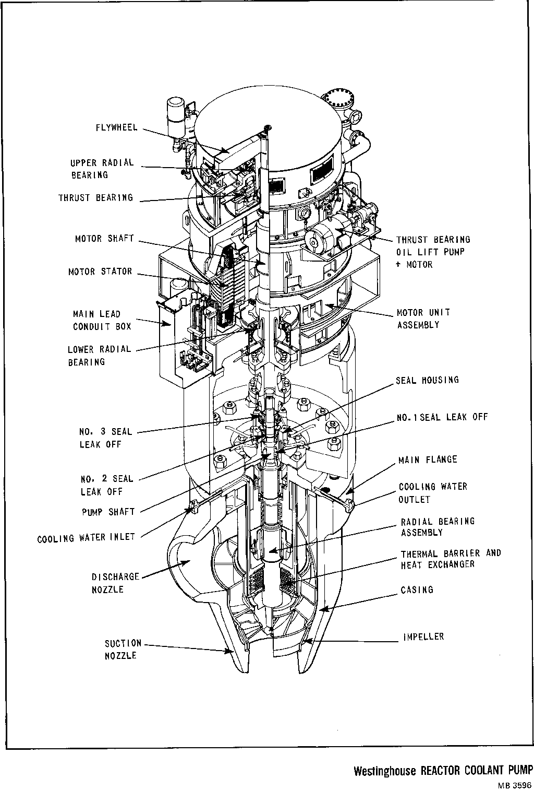
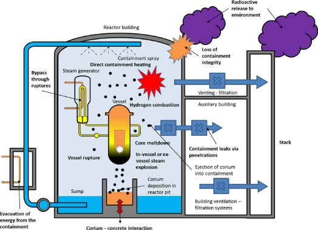

At 4:00 a.m. on March 28, 1979, a series of mechanical failures and human errors triggered a partial meltdown at the Three Mile Island nuclear power plant near Harrisburg, Pennsylvania. For five days, the nation held its breath as officials struggled to understand what was happening inside a crippled reactor. Conflicting information, institutional failures, and public terror pushed America to the brink of its worst nuclear nightmare.
In this simulation, you are a Nuclear Regulatory Commission inspector dispatched to investigate the crisis. You will walk through the technical failures, make decisions about public safety, and testify before the presidential commission.
The reactor was real. The failures were real. The questions about nuclear power are still being asked.
Current location
Investigated
Preliminary Assessment Report
U.S. Nuclear Regulatory Commission — Incident Response
Following your initial assessment of TMI Unit 2, all NRC inspectors on-site are required to file a preliminary assessment report documenting their observations. Complete this form to the best of your ability. Accuracy is critical — this document will become part of the official investigation record and will inform decisions about public protective actions.
Note: This is an educational simulation. However, NRC inspectors were required to file written assessments during the TMI crisis. These reports became key documents in the subsequent investigations.
I certify that the information provided in this report is accurate and complete to the best of my knowledge and observation. I understand that this document will be entered into the official investigation record and may be reviewed by the investigating commission.
Special News Report
March 28, 1979
CBS Evening News coverage from March 28, 1979 — the day of the accident. The confusing, often contradictory reports shown here mirror the information chaos that defined the crisis.
Key Technical Evidence
Technical evidence examined during the investigation
The Stuck PORV — The Initiating Failure

Technical diagram of a Westinghouse Reactor Coolant Pump — a critical component of the primary cooling system. Understanding these systems was essential to diagnosing what went wrong at TMI.
The pilot-operated relief valve (PORV) on the pressurizer opened automatically when pressure rose after the feedwater trip — exactly as designed. But it failed to close when pressure dropped. For 2 hours and 22 minutes, reactor coolant drained through the stuck-open valve. The control room had no direct indicator of the valve's actual position — only a light showing that the close signal had been sent.
The Davis-Besse Precedent
In September 1977, the Davis-Besse nuclear plant in Ohio experienced a nearly identical event: a feedwater transient followed by a stuck-open PORV. Operators at Davis-Besse also initially misdiagnosed the situation. A Babcock & Wilcox engineer wrote an internal memo warning that operators could make this mistake. The memo never reached TMI's operators or the NRC's enforcement staff.
The Hydrogen Bubble
When the Zircaloy fuel cladding reacted with steam at extreme temperatures, it produced approximately 1,000 cubic feet of hydrogen gas. This hydrogen collected at the top of the reactor vessel. For several days, officials feared it could mix with oxygen and explode. The fear was eventually determined to be unfounded — the chemistry inside the vessel could not produce a flammable mixture — but the hydrogen bubble became the defining terror of the crisis.
The Core Damage — Revealed in 1985

Diagram of a severe reactor accident scenario: core meltdown, hydrogen combustion, containment breach, and radioactive release pathways. TMI came perilously close to several of these outcomes.
When remote cameras finally entered the reactor vessel in 1985, they revealed that approximately 62 tons of fuel — about half the core — had melted. Molten fuel had flowed to the bottom of the reactor vessel, forming a mass of solidified material. The reactor vessel came within 30–60 minutes of being breached. This damage was far worse than anyone estimated during the crisis.